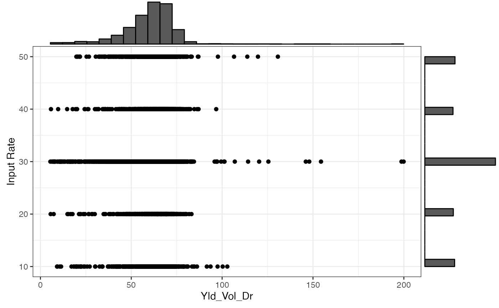

check_ortho_with_chars.RdCheck the orthogonality of the trial input rates and observed characteristics provided by the user
check_ortho_with_chars(td, sp_data_list, vars_list)(tibble) trial design data created by make_exp_plots() and assign_rates()
(list) list of spatial datasets as `sf` from the `sf` package or `SpatRaster` from the `terra` package
(list) list of character vectors indicating the name of the variables to be used in the datasets specified in sp_data_list
a list
data(td_single_input)
yield_sf <- sf::st_read(system.file("extdata", "yield-simple1.shp", package = "ofpetrial"))
#> Reading layer `yield-simple1' from data source
#> `/private/var/folders/tg/3shgnxh95bj__tdvkkmgs8n80000gn/T/RtmpZ9uc8n/temp_libpath134c436827335/ofpetrial/extdata/yield-simple1.shp'
#> using driver `ESRI Shapefile'
#> Simple feature collection with 16822 features and 34 fields
#> Geometry type: POINT
#> Dimension: XY
#> Bounding box: xmin: -16.70075 ymin: 39.11962 xmax: -16.69612 ymax: 39.1269
#> Geodetic CRS: WGS 84
ssurgo_sf <-
sf::st_read(system.file("extdata", "ssurgo-simple1.shp", package = "ofpetrial")) %>%
dplyr::mutate(mukey = factor(mukey))
#> Reading layer `ssurgo-simple1' from data source
#> `/private/var/folders/tg/3shgnxh95bj__tdvkkmgs8n80000gn/T/RtmpZ9uc8n/temp_libpath134c436827335/ofpetrial/extdata/ssurgo-simple1.shp'
#> using driver `ESRI Shapefile'
#> Simple feature collection with 11 features and 9 fields
#> Geometry type: POLYGON
#> Dimension: XY
#> Bounding box: xmin: -16.70096 ymin: 39.11957 xmax: -16.69587 ymax: 39.12696
#> Geodetic CRS: WGS 84
topo_rast <-
c(
terra::rast(system.file("extdata", "slope.tif", package = "ofpetrial")),
terra::rast(system.file("extdata", "twi.tif", package = "ofpetrial"))
)
checks <-
check_ortho_with_chars(
td = td_single_input,
sp_data_list = list(yield_sf, ssurgo_sf, topo_rast),
vars_list = list("Yld_Vol_Dr", c("mukey", "clay"), names(topo_rast))
)
#> Warning: There was 1 warning in `dplyr::mutate()`.
#> ℹ In argument: `checks = purrr::pmap(list(trial_design, spatial_data,
#> variable), summarize_chars)`.
#> Caused by warning:
#> ! Computation failed in `stat_bin()`
#> Caused by error in `abs()`:
#> ! non-numeric argument to mathematical function
checks$summary_data[[1]]
#> var cor_with_rate
#> 1 Yld_Vol_Dr 0.01821775
checks$summary_fig[[1]]
